Zion National Park Travel Guide
Park known for Zion Canyon, with deep canyon walls of reddish and tan-colored Navajo Sandstone eroded by the North Fork of the Virgin River, and includes mountains, canyons, buttes, mesas, monoliths, rivers, slot canyons, and natural arches
Limited Shuttle Operations and Areas of Zion National Park Open July 1, 2020
Shuttles began limited operatons on July 1, 2020. Advanced tickets required
Good for seven days
Accepts America The Beautiful Pass
How to Get There
From Las Vegas (159mi) Get on I-515 N/US-93 N/US-95 N from N 6th St. Follow I-15 N to UT-9 E/W State St in Washington. Take exit 16 from I-15 N. Follow UT-9 E to Sundance Rd in Springdale.
Overview
Zion National Park in southwestern Utah is one of the most visited parks in the country, famous for Zion Canyon, a 15-mile-long, up to 2,640-foot-deep gorge cut by the North Fork of the Virgin River through reddish and tan Navajo Sandstone. Sheer cliffs, towers, and monoliths, such as the Great White Throne, Angels Landing, and the Court of the Patriarchs, rise straight up from the canyon floor. The park covers about 229 square miles and sits where the Colorado Plateau, Great Basin, and Mojave Desert meet, which gives it unusual variety, from desert to forest to riverside gardens.
The area was first protected in 1909 as Mukuntuweap National Monument and became Zion National Park in 1919. The name Zion, a biblical word for a place of refuge, was given by Mormon settlers in the 1860s. Visitors come for the dramatic scenery, the chance to wade through the Narrows, the cliff-edge hike to Angels Landing, the waterfalls and pools, and the easy access to the canyon by free shuttle.
Park Sections
Zion has several distinct areas. Zion Canyon, at the south entrance near Springdale, is the heart of the park, reached by the 6-mile Zion Canyon Scenic Drive, which ends at the Temple of Sinawava and the start of the Narrows. The east side of the park along the Zion-Mount Carmel Highway (SR-9) passes through a 1.1-mile tunnel and by Checkerboard Mesa. The Kolob Terrace Road leaves Virgin and climbs to Lava Point and trailheads such as the Subway. Kolob Canyons, in the northwest corner, is reached from Interstate 15 at exit 40, about 40 miles from Springdale, and has its own scenic road and trailheads, including the one to Kolob Arch.
Sightseeing and Exploring the Park
The main scenic drive is Zion Canyon Scenic Drive, which for most of the year is open only to shuttle buses and is served by stops at the Court of the Patriarchs, Zion Lodge, the Grotto, Weeping Rock, Big Bend, and the Temple of Sinawava. Along the way, pull-offs and short walks give views of the canyon walls. The Zion-Mount Carmel Highway is open to cars year-round and offers dramatic views of slickrock domes and the Checkerboard Mesa; oversized vehicles need a permit and an escort through the tunnel. Kolob Canyons has a 5-mile scenic road ending at a viewpoint over the red fingers of rock, which is a quiet alternative to the main canyon.
Hiking
Zion offers some of the best hiking in the Southwest. Easy options include the paved Riverside Walk (about 2.2 miles round trip), the Pa'rus Trail, the Weeping Rock trail, and the lower Emerald Pools. The Canyon Overlook Trail and Watchman Trail are moderate. Angels Landing is a strenuous 5.4-mile round trip with steep drop-offs and chains, and it requires a permit. Observation Point and the West Rim Trail are long, steep climbs. The Narrows, a walk up the river between narrow canyon walls, needs waterproof footwear and attention to the weather and river flow. The Subway and Kolob Arch are backcountry routes.
Other Activities
Beyond sightseeing and hiking, Zion is known for canyoneering, with technical slot canyons that require permits and skill, and for rock climbing on the big sandstone walls. Visitors can bike the Pa'rus Trail, ride horses on guided trips from the Zion Lodge (seasonal), join ranger programs, and visit the Zion Human History Museum. Outfitters in Springdale rent gear for the Narrows, such as dry suits, boots, and walking sticks, and lead guided canyoneering and hiking trips. There are no cave tours or boat trips in the park.
Flora and Wildlife
Zion has four main life zones (desert, riparian, woodland, and coniferous forest), and its plants include cottonwoods and box elders along the river, hanging gardens of ferns and monkey flower on the seeps, pinyon-juniper woodland, and ponderosa pine and fir at higher elevations. In fall, the cottonwoods and maples turn gold and red. Wildlife includes mule deer, desert bighorn sheep, which are often seen on the east side near the tunnel, wild turkeys, rock squirrels, and canyon tree frogs. California condors, which were reintroduced to the region, can sometimes be seen in the sky, as can peregrine falcons. Wildlife viewing is on your own.
Access
Zion is reached by car from Springdale at the south entrance, on Utah Highway 9. Las Vegas is about 160 miles (2.5 hours) southwest, Salt Lake City about 310 miles (4.5 hours) north, and St. George about 45 miles (roughly 1 hour) west. The nearest airports are St. George Regional Airport and Cedar City, with major airports at Las Vegas and Salt Lake City. Parking inside the canyon is limited, so many visitors park in Springdale and use the town shuttle to the park entrance. Visitors on the east side can reach the park from Kanab or Mount Carmel Junction.
Seasons
Spring brings wildflowers and waterfalls, but the weather is changeable and the Narrows may be closed by high spring runoff. Summer is hot, often above 100 °F, and brings afternoon storms; flash flood warnings may close the Narrows and slot canyons. Fall is the most pleasant, with colors peaking in late October in the canyon. In winter the park is much quieter, the canyon is mild, trails may be icy, and cars are generally allowed on the scenic drive, while shuttles run from around early April to late October and on some holiday weekends. Check the National Park Service website for current schedules.
Camping and Lodging
Lodging in the park is available at Zion Lodge, halfway through Zion Canyon, with motel rooms, cabins, and a restaurant; book far ahead. Watchman Campground and South Campground, both near the south entrance, take reservations, and Lava Point is a small primitive campground in the middle of the park off Kolob Terrace Road, usually open in summer. Backcountry camping requires a permit. Springdale, just outside the park, has many hotels, B&Bs, and restaurants, including the Cable Mountain Lodge, Desert Pearl Inn, and Hampton Inn, as well as Zion Canyon Campground. St. George and Hurricane, about an hour away, have more hotels, and Kanab has motels about 45 minutes from the east entrance.
Visitor Centers
The Zion Canyon Visitor Center at the south entrance is the main visitor center and the hub of the shuttle system, with exhibits, a bookstore, and rangers who can advise on trails, weather, and permits. The Zion Human History Museum, a short drive or shuttle ride farther into the canyon, covers the history of the area and offers a film, and the Zion Nature Center, open seasonally, runs children's programs. In the northwest, the Kolob Canyons Visitor Center at exit 40 of Interstate 15 serves visitors to that section.
Shuttle System
The Zion National Park Shuttle System provides transportation through Zion Canyon during the busiest visitor season. The shuttle program helps reduce traffic congestion, improve visitor access, protect park resources, and enhance safety within the canyon. During shuttle operating periods, private vehicles are generally not permitted on the Zion Canyon Scenic Drive.
The system consists of two interconnected shuttle routes: the Zion Canyon Shuttle and the Springdale Shuttle. Together, these services provide convenient access to many of the park's most popular trailheads, viewpoints, visitor facilities, and recreational opportunities.
Zion Canyon Shuttle
The Zion Canyon Shuttle transports visitors along Zion Canyon Scenic Drive, stopping at major attractions throughout the canyon. The shuttle is the primary way to reach popular destinations when private vehicle access is restricted.
- Access to Zion Canyon: Provides transportation throughout the main canyon.
- Major Stops: Serves popular destinations including The Grotto, Zion Lodge, Big Bend, Temple of Sinawava, and other key locations.
- Trail Access: Provides access to trailheads for Angels Landing, The Narrows, Emerald Pools, West Rim Trail, and other hikes.
- Frequent Service: Shuttles operate regularly throughout the day during the shuttle season.
Springdale Shuttle
The Springdale Shuttle operates in the town of Springdale and connects visitors with the Zion National Park pedestrian entrance. The service allows visitors to park in town and travel conveniently to the park entrance.
- Gateway Transportation: Connects Springdale lodging, businesses, and public parking areas with the park entrance.
- Multiple Stops: Stops are located throughout the town of Springdale.
- Park Connection: Provides easy access to the Zion Canyon Shuttle system.
- Walk-In Entry: Visitors enter the park on foot after exiting the Springdale Shuttle.
Using the Shuttle System
- No Ticket Required: Visitors do not need separate shuttle tickets to ride the system.
- Park Entrance Fee Required: A valid park pass or entrance fee is required to enter Zion National Park.
- First-Come, First-Served: Seating is available on a first-come, first-served basis.
- Board at Designated Stops: Visitors may only board and exit at official shuttle stops.
- Save Time: Early arrival is recommended during busy periods and holidays.
Popular Destinations Reached by Shuttle
- Angels Landing: Access via The Grotto shuttle stop.
- The Narrows: Access via Temple of Sinawava.
- Emerald Pools: Access via Zion Lodge or The Grotto.
- Riverside Walk: Access via Temple of Sinawava.
- West Rim Trail: Access via The Grotto.
- Zion Lodge: Direct shuttle access for lodging, dining, and nearby trails.
Accessibility
The shuttle system is designed to accommodate a wide range of visitors and provides accessible transportation throughout the canyon.
- Wheelchair Accessible: Accessible shuttle vehicles are available.
- Service Animals Allowed: Service animals are permitted in accordance with park regulations.
- Accessible Stops: Major visitor facilities and shuttle stops are designed for accessibility.
Benefits of the Shuttle System
- Reduces Traffic Congestion: Limits vehicle traffic within the canyon.
- Protects Natural Resources: Helps minimize environmental impacts from vehicle use.
- Improves Visitor Experience: Reduces parking challenges and provides convenient transportation.
- Enhances Safety: Supports safer travel through the narrow canyon corridor.
- Preserves Scenic Views: Reduces the visual impact of large numbers of parked vehicles.
Important Visitor Information
- Seasonal Operation: Shuttle schedules and operating dates vary throughout the year.
- Crowding Expected: Wait times may increase during weekends, holidays, and peak visitation periods.
- Plan Ahead: Visitors should review current schedules before arrival.
- Stay on Schedule: Allow extra time when using the shuttle to access hikes or ranger programs.
This article uses material from National Park Service resources describing the Zion National Park Shuttle System, including Zion Canyon Shuttle operations, Springdale Shuttle services, visitor transportation procedures, accessibility information, and visitor planning guidance. Sources: Zion National Park Shuttle System information published by the National Park Service and associated transportation program resources.
This article uses material from the Wikipedia article "Zion National Park", which is released under the Creative Commons Attribution-Share-Alike License 3.0. Additional information comes from the National Park Service Zion National Park website.
Featured Sections and Trails

Jeff P from Berkeley, CA, USA, CC BY 2.0, via Wikimedia Commons; Image Size Adjusted
.jpg){kind=link}
Angels Landing Trail
2.5 miles, 1500 feetTrail cut into 1,488-foot (454 m) tall rock formation in 1926 leads to the top of Angels Landing and provides views of Zion Canyon
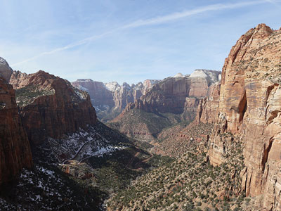
Dough4872, CC BY-SA 4.0, via Wikimedia Commons; Image Size Adjusted

Canyon Overlook Trail
Short scenic hike featuring sandstone cliffs, slickrock formations, a slot canyon passage, and panoramic views of Zion Canyon and surrounding peaks.
Difficulty: Moderate
Short scenic hike to a dramatic canyon overlook with steep cliffs and sweeping views
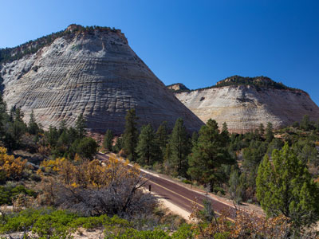
Dough4872, CC BY-SA 4.0, via Wikimedia Commons; Image Size Adjusted
Checkerboard Mesa
Massive sandstone formation marked by a distinctive grid of intersecting cracks and weathered lines that create one of the most recognizable geologic features in the park.

Dough4872, CC BY-SA 4.0, via Wikimedia Commons; Image Size Adjusted
Coalpits Wash
A remote desert wash hike following a sandy streambed through colorful badlands, scattered cottonwood groves, and quiet canyon landscapes shaped by ancient geology.
Difficulty: Moderate to strenuous
Remote desert wash hike through sandy terrain and colorful rock formations
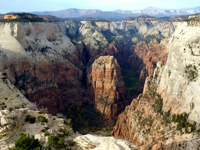
Dough4872, CC BY-SA 4.0, via Wikimedia Commons; Image Size Adjusted
Deertrap Mountain
A high plateau hike leading to a remote cliff-edge overlook with expansive panoramic views across deep canyons, towering sandstone formations, and rugged desert terrain.
Difficulty: Moderate to strenuous
Remote plateau hike ending at a dramatic overlook above Zion Canyon
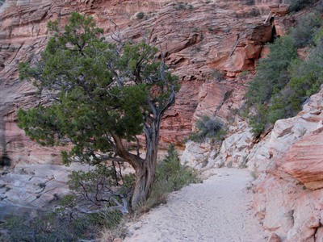
Dough4872, CC BY-SA 4.0, via Wikimedia Commons; Image Size Adjusted
East Rim Trail
A long desert hiking route traversing high sandstone plateaus, pine forests, and dramatic canyon overlooks with sweeping views of rugged cliffs and deep valleys.
Difficulty: Strenuous
Long backcountry route across forested plateaus and canyon overlooks
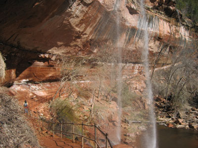
Dough4872, CC BY-SA 4.0, via Wikimedia Commons; Image Size Adjusted
Emerald Pools
Series of spring-fed pools, waterfalls, and lush hanging gardens connected by scenic trails beneath towering sandstone cliffs.
Difficulty: Easy to Moderate
Series of scenic trails leading to lush pools and seasonal waterfalls
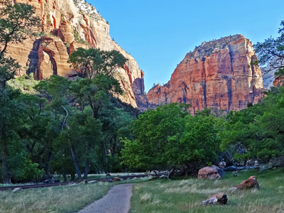
Dough4872, CC BY-SA 4.0, via Wikimedia Commons; Image Size Adjusted
Grotto Trail
Easy riverside path through a shaded canyon floor connecting picnic areas and trailheads while offering views of towering sandstone cliffs and wildlife habitat.
Difficulty: Easy
Easy connector trail running along the canyon floor beside the river

Dough4872, CC BY-SA 4.0, via Wikimedia Commons; Image Size Adjusted
Hidden Canyon Trail
Strenuous cliffside route featuring chain-assisted sections, dramatic canyon views, and a secluded sandstone canyon tucked high above the main valley.
Difficulty: Strenuous
Narrow canyon hike with cliffside sections and chain-assisted paths
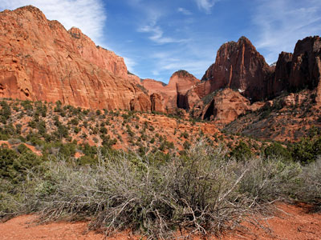
Kolob Arch Trail, Zion National Park, UT
Wikimedia Commons, CC BY-SA 2.0, via Wikimedia Commons
_(3440688580).jpg){kind=link}
Kolob Arch
2.5 miles, 1500 feetA massive natural rock arch spanning a remote canyon, reached by a long backcountry hike through rugged desert terrain and scenic sandstone landscapes.
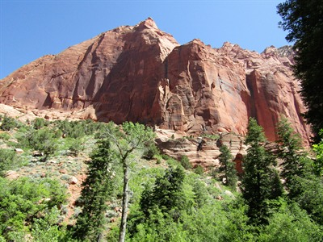
Dough4872, CC BY-SA 4.0, via Wikimedia Commons; Image Size Adjusted
Kolob Canyons
A scenic region of towering red rock canyons, dramatic cliffs, desert landscapes, and hiking trails that provides a quieter and less-crowded gateway to some of the most impressive scenery in the park.
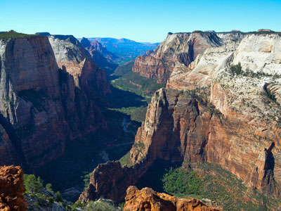
Dough4872, CC BY-SA 4.0, via Wikimedia Commons; Image Size Adjusted
Observation Point
Panoramic cliff-top viewpoint overlooking a vast canyon system, soaring sandstone formations, and dramatic desert landscapes from one of the highest accessible overlooks in the park.
Difficulty: Moderate
Elevated viewpoint offering one of the highest panoramic perspectives in the park
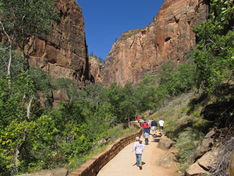
Dough4872, CC BY-SA 4.0, via Wikimedia Commons; Image Size Adjusted
Riverside Walk
Paved riverside trail following a narrow canyon corridor beneath towering sandstone cliffs with access to hanging gardens, spring-fed vegetation, and the gateway to a famous river hike.
Difficulty: Easy
Paved riverside path leading into a narrow canyon at the start of a famous hike
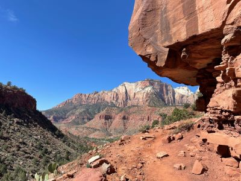
Dough4872, CC BY-SA 4.0, via Wikimedia Commons; Image Size Adjusted
Watchman Trail
A short but scenic climb leading to a panoramic overlook of canyon walls, desert peaks, and a winding river set against towering sandstone formations.
Difficulty: Moderate
Short hike to a scenic overlook above the canyon and nearby town
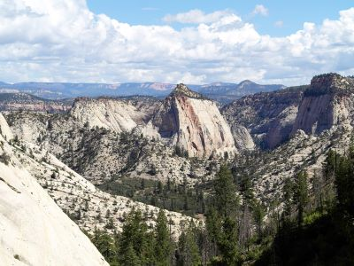
Dough4872, CC BY-SA 4.0, via Wikimedia Commons; Image Size Adjusted
West Rim Trail
A dramatic backcountry route traversing Zion’s high plateau and descending into the main canyon, offering expansive views, diverse terrain, and access to iconic landmarks like Angels Landing.
Difficulty: Strenuous
Strenuous trail featuring steep climbs and sweeping canyon vistas.
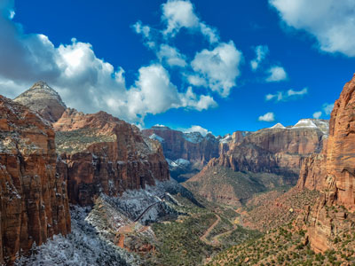
Zion Canyon, Zion National Park, UT
Photo by Karan Chawla on Unsplash
Zion Canyon
2.5 miles, 1500 feetDeep and narrow gorge in southwestern Utah, carved by the North Fork of the Virgin River. Nearly the entire canyon is located within the western half of Zion National Park

Dough4872, CC BY-SA 4.0, via Wikimedia Commons; Image Size Adjusted
Zion Human History Museum
Narrowest section of Zion Canyon in Zion National Park. Situated on the North Fork of the Virgin River and upstream of the main canyon, The Narrows is one of the premier hikes in the park and on the Colorado Plateau.
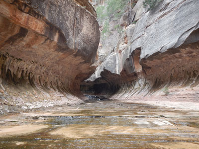
Dough4872, CC BY-SA 4.0, via Wikimedia Commons; Image Size Adjusted
Zion Human History Museum
Small, uniquely-shaped slot canyon in the larger Great West Canyon located between two peaks on the Kolob Plateau.
Small, uniquely-shaped slot canyon in the larger Great West Canyon located between two peaks on the Kolob Plateau.
Photo by Karan Chawla on Unsplash; Image Size Adjusted
Zion Human History Museum
2.5 miles, 1500 feetA small but insightful museum near Zion’s entrance that explores thousands of years of human history, from Native American cultures to modern visitors, all shaped by the canyon’s landscape and water.
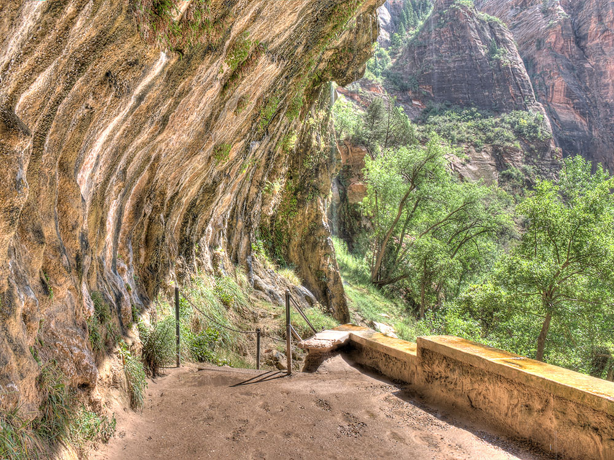

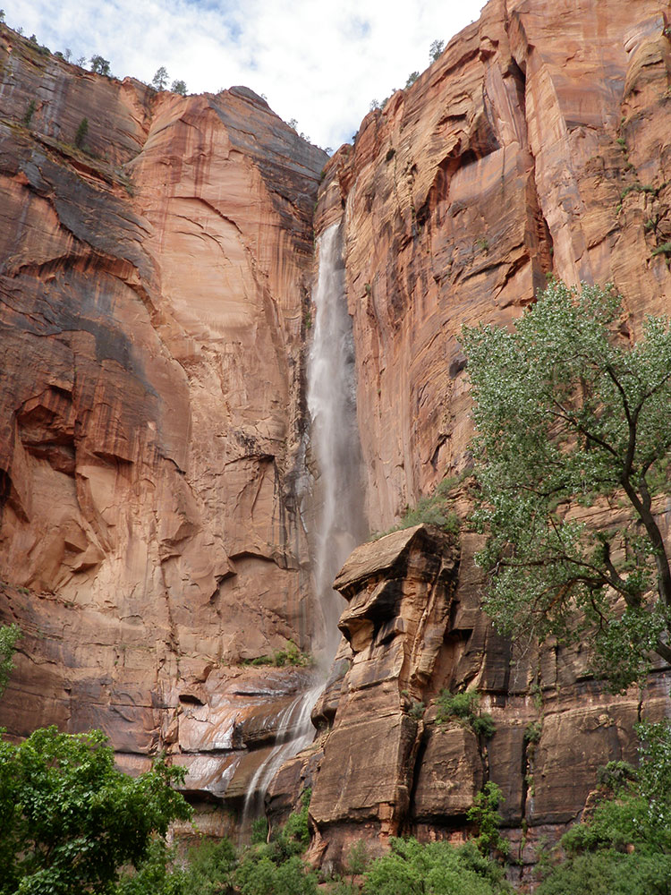
.jpg){kind=link}
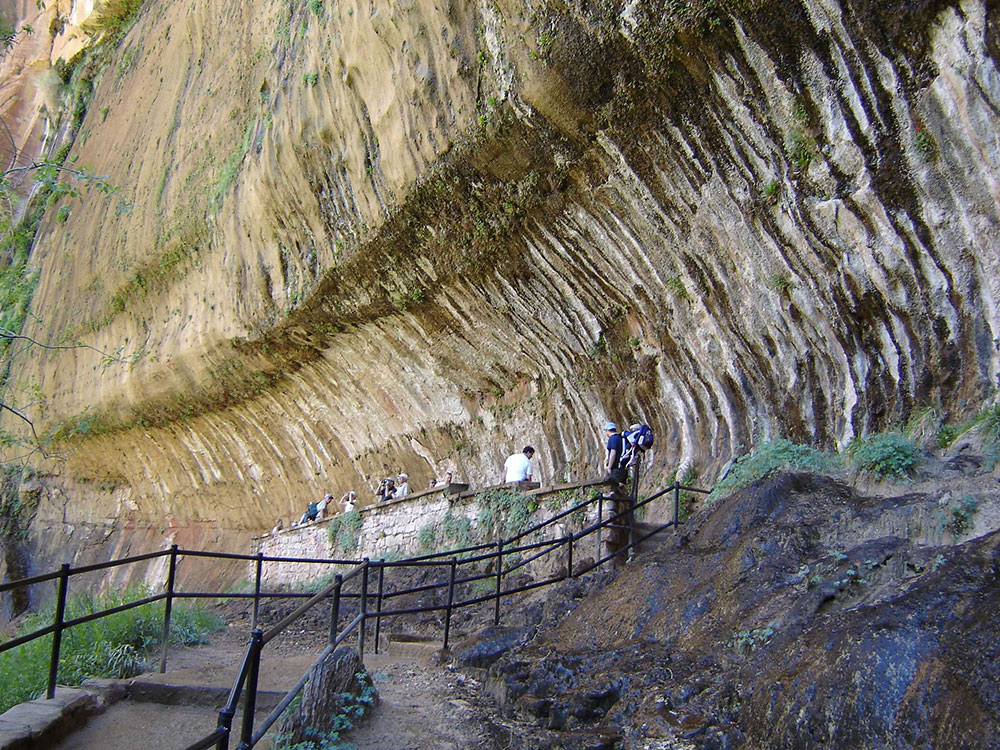

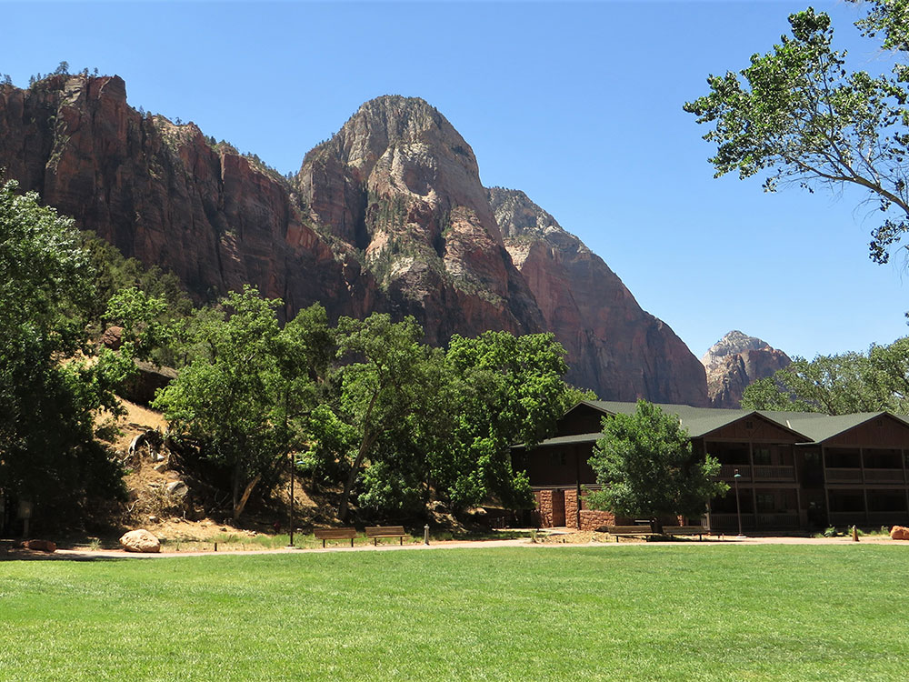

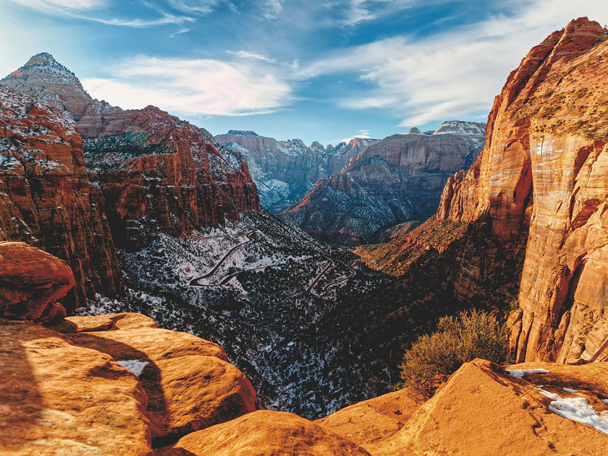
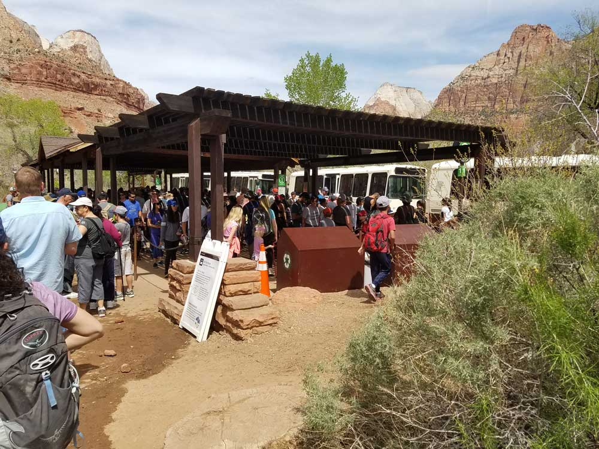
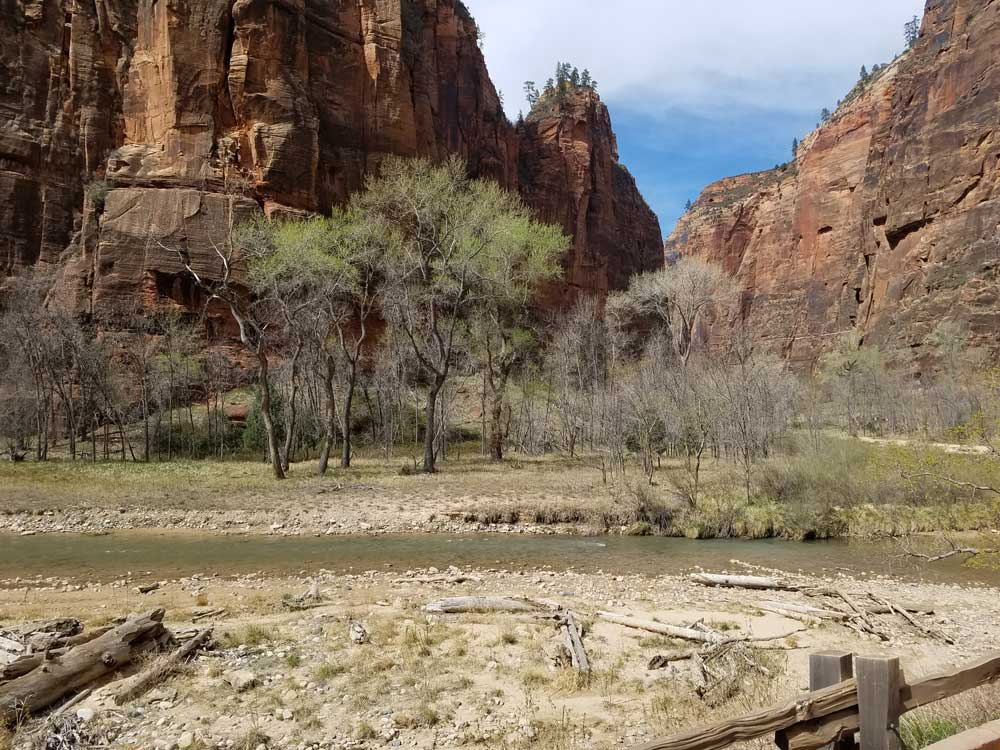